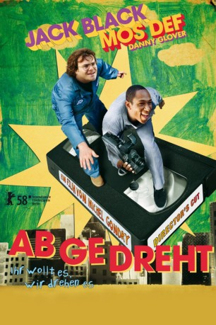

#9882 Abgedreht
Alternativ: Be Kind Rewind
 
 IMDB-Wertung: 6.4 / 10
IMDB-Wertung: 6.4 / 10  Metascore: 52
Metascore: 52 
Der trottelige Jerry wird bei einer Sabotageaktion in einem Kraftwerk auf seltsame Weise magnetisiert. Kaum, dass er seinen besten Kumpel Mike besucht, löscht er unabsichtlich sämtliche Bänder in dessen alter Videothek. Als eine Stammkundin unbedingt "Ghostbusters" sehen will, drehen die beiden den Film kurzerhand selbst nach. Das Ganze bleibt kein Einzelfall und plötzlich sind die mit Hausmitteln produzierten Filmklassiker schwer gefragt...
Jahr: 2008
Dauer: 97 Minuten
FSK: 0
Land: England Studio: Senator FilmTonspuren:
Untertitel:
Auflösung: SD (704x288) Größe: 1484 MB
Genre: Komödie
Regisseur: Michel Gondry
Drehbuch: Michel Gondry
Soundtrack: Jean-Michel Bernard
Darsteller:
 Jack Black als Jerry
Jack Black als Jerry Yasiin Bey als Mike
Yasiin Bey als Mike Danny Glover als Mr. Fletcher
Danny Glover als Mr. Fletcher Mia Farrow als Miss Falewicz
Mia Farrow als Miss Falewicz Melonie Diaz als Alma
Melonie Diaz als Alma- Chandler Parker als Craig
- Arjay Smith als Manny
- Quinton Aaron als Q
- Marcus Carl Franklin als Kid 1
- Blake Hightower als Kid 2
- Amir Ali Said als Kid 3
- Heather Lawless als Sherry
 Karolina Wydra als Gabrielle Bochenski
Karolina Wydra als Gabrielle Bochenski Marc Alan Austen als Man in Video Store #3
Marc Alan Austen als Man in Video Store #3- Kid Creole als West Coast Video Employee Passaic
 Jon Glaser als West Coast Video Employee NYC
Jon Glaser als West Coast Video Employee NYC P.J. Byrne als Mr. Baker
P.J. Byrne als Mr. Baker Marceline Hugot als City Hall Employee
Marceline Hugot als City Hall Employee John Tormey als Demolition Chief
John Tormey als Demolition Chief Matt Walsh als Officer Julian
Matt Walsh als Officer Julian- Paul Dinello als Mr. Rooney
 Sigourney Weaver als Ms. Lawson
Sigourney Weaver als Ms. Lawson- Sacha Bourdo als Man in queue (uncredited)
- Olivia Coronel als Kid Playing at the Park (uncredited)
- Steve Cropper als Fats Waller's fan in train (uncredited)
- Anthony Guerino als Laundromat Patron (uncredited)
- Booker T. Jones als Fats Waller's fan in train (uncredited)
- Irv Gooch als Wilson
- Gio Perez als Randy
- Basia Rosas als Andrea
- Tomasz Soltys als Carl
- David Slotkoff als Jack
- Frank Heins als Patrick
- Harvey Hogan als Video Store Customer
- Ted McElwee als Video Store Customer
- Walter Helbig als Video Store Customer
- Victor Dickerson als Man in Video Store #1
- David M. Sheppard als Man in Video Store #2
- Paul Barman als Young Man Watching TV
- Karen Spitzer als Young Woman Watching TV
- Allie Woods Jr. als Doctor Bent
- McKinley Page als Brother McDuff
- Francisco Fabian als Simon from the Copy Shop
- Kishu Chand als Alma's Sister
- Ann Longo als Miss Falewicz's Friend
- Parrie Hodges als Miss Falewicz's Friend / Fats' Mom
- Frank Girardeau als Officer Gary
- Loukas Papas als Tophat Harry (uncredited)
- Jimmy Scott als Fats Waller's fan in train (uncredited)
- McCoy Tyner als Fats Waller's fan in train (uncredited)
Datei: X:\2008(A-F)\Abgedreht (2008, FSK0, 704x288).avi seit 08.11.2018
Festplatte: HD 2007(A-Z)-2008(A-F)
 Es gibt insgesamt 66 Filme in der Gruppe '2008(A-F)'
Es gibt insgesamt 66 Filme in der Gruppe '2008(A-F)'